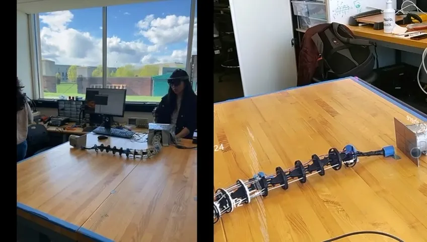
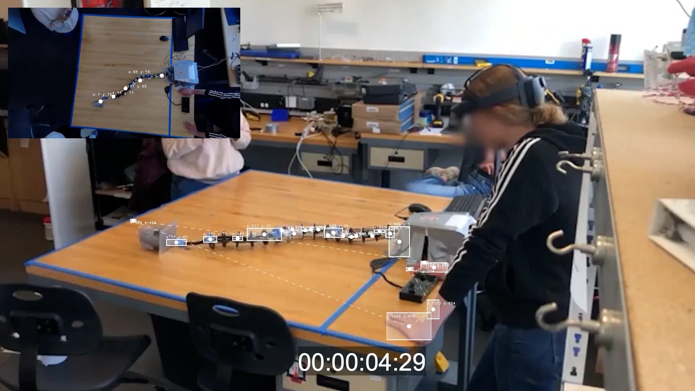
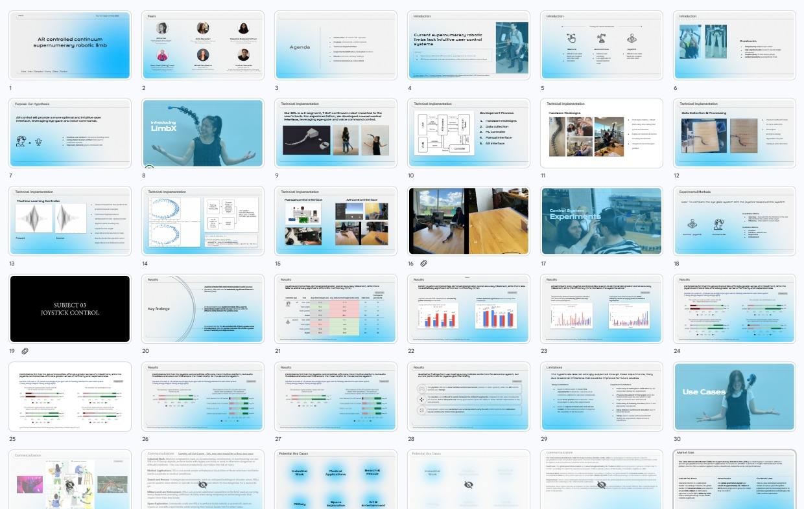
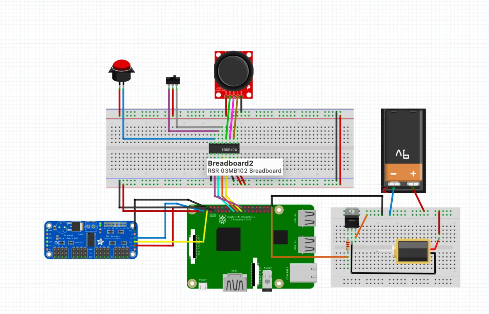

ARCCSRL
Harry explored human-computer interaction technologies through MIT Media Lab's course, contributing to the ARCCSRL continuous robotic limb research project. He was responsible for visual communication assets, assisting in building the HoloLens AR GUI, and designing the final presentation report. The research outcomes were exhibited at Harvard Innovation Labs and MIT Media Lab.
Human 2.0 At MIT
This MIT Media Lab course delves into the principles underlying current and future technologies for cognitive, emotional, social, and physical augmentation. Topics span robotic exoskeletons and orthoses, limb prostheses, neural implants, social-emotional prostheses, and cognitive prostheses at the cutting edge of human augmentation research.
Harry joined the research team as a multimedia designer, translating complex scientific information into clear and compelling visual language — from experimental diagrams to the final presentation — throughout the entire research cycle.
- Biomechatronics — Powered Prostheses & Exoskeletons by Prof. Hugh Herr
- Neural Interfaces — Peripheral & Central Neuroprostheses
- Human Subject Testing — MIT COUHES Experimental Design
- Semester Project — Human Augmentation Research & Publication
.webp)

AR X ROBOTIC LIMB
Harry assisted the ARCCSRL team in building the HoloLens visual-assist GUI for the continuous robotic limb developed at MIT Media Lab. This AR interface integrates eye-gaze tracking and voice commands, enabling users to intuitively control limb movements without any physical contact.
To ensure readability in mixed reality environments, Harry assisted in designing floating UI components for HoloLens — including status indicators, operation prompts, and real-time feedback visuals — enabling users to instantly understand prosthetic control states while wearing the device.
- HoloLens GUI Development
- Mixed Reality UI Components
- User Testing Data Visualization
- Supporting User Experiments
"You Can Move Things By Just Looking At It!"


"We Conducted 22 User Testing Protocol"
Results And Takeaways
During this research, Harry contributed visual assets and assisted in conducting user testing sessions. Through 22 user testing protocols, the team collected and analyzed extensive interaction data. The final outcomes were exhibited at Harvard Innovation Labs and MIT Media Lab, generating broad discussion and attracting significant attention from the industry.
Key contributions: visual communication asset production, supporting 22 user testing sessions, transforming complex experimental data into intuitive visualizations, designing the final presentation report, and showcasing research outcomes at Harvard & MIT.


MULTIMEDIA DESIGN X RESEARCH
Leveraging a multimedia design background, Harry transformed technical research data and findings into clear, accessible visual diagrams — helping the team effectively communicate their work during experiments and in the final report.
Harry led the design of the final presentation deck, integrating technical diagrams of the robotic limb, user testing statistics, and HoloLens interface screenshots into a cohesive visual narrative — used in formal presentations at Harvard Innovation Labs and MIT Media Lab.
- Research Diagrams & Data Visualization
- Final Presentation Deck Design
- Exhibited at Harvard & MIT
.webp)
.webp)

.webp)